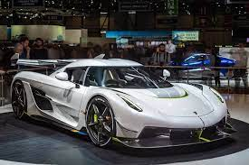

Koenigsegg
Koenigsegg Jesko

Koenigsegg Jesko diperkenalkan pada tahun
2019 sebagai penerus dari Agera. Nama Jesko diambil dari
nama ayah pendiri perusahaan, Jesko von Koenigsegg. Mobil ini
dirancang untuk menjadi mobil lintasan yang sangat cepat dan lincah.
Jesko dilengkapi dengan mesin V8 twin-turbo yang dapat menghasilkan
hingga 1.600 tenaga kuda dengan bahan bakar E85. Jesko memiliki dua
versi utama: Jesko Absolut, yang difokuskan pada kecepatan
tertinggi, dan Jesko Attack, yang difokuskan pada performa
lintasan.
Kelebihan
- Jesko dilengkapi dengan mesin V8 twin-turbo 5.0-liter yang menghasilkan hingga 1.600 tenaga kuda pada bahan bakar E85, menjadikannya salah satu hypercar terkuat di dunia.
- Aerodinamika aktifnya, termasuk sayap belakang canggih dan flap depan aktif, memberikan downforce dan stabilitas yang luar biasa pada kecepatan tinggi, penting untuk performa di lintasan.
-
Jesko memiliki transmisi Light Speed Transmission (LST) yang
inovatif, menawarkan perpindahan gigi yang mulus dan sangat cepat,
meningkatkan kinerja dan kenikmatan berkendara.
Daftar Harga
| Series | Tentang | |
|---|---|---|
| Tahun | Harga | |
| Koenigsegg Jesko | 2021 | Rp 50.000.000.000 |